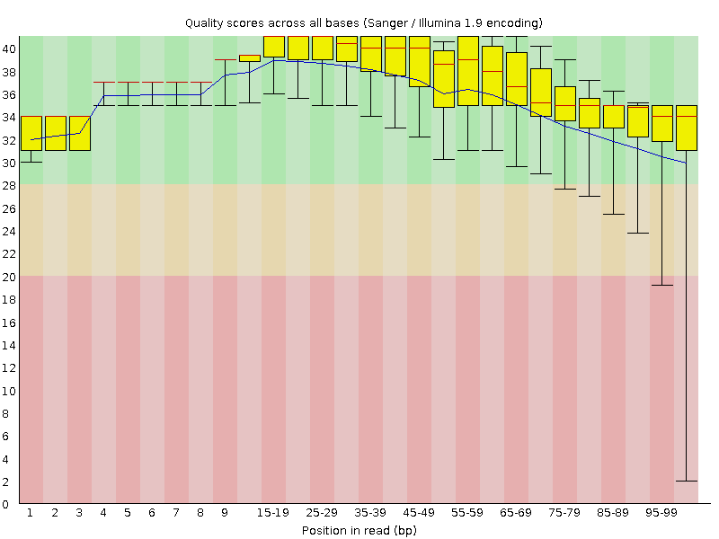
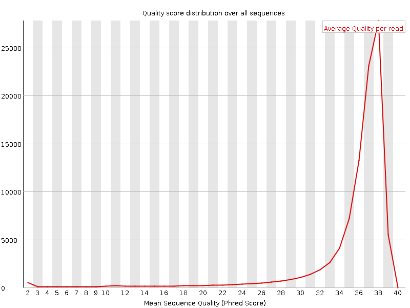
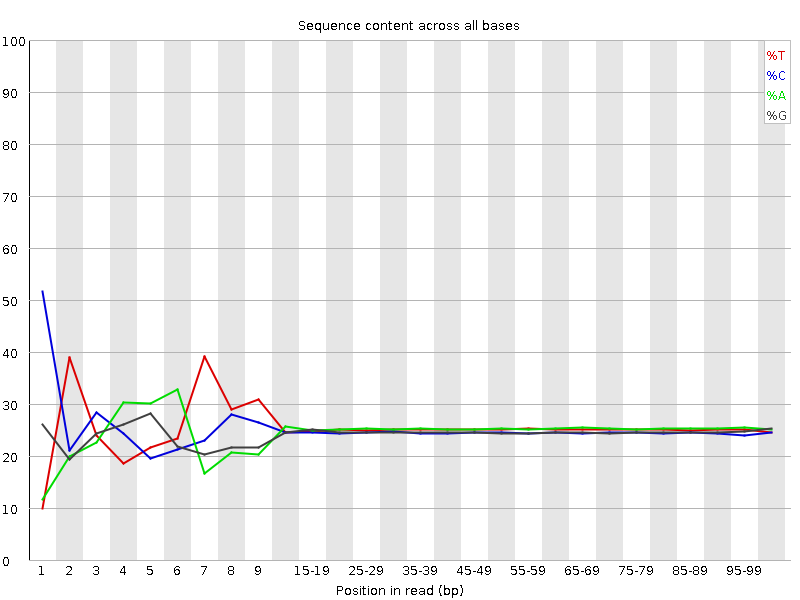
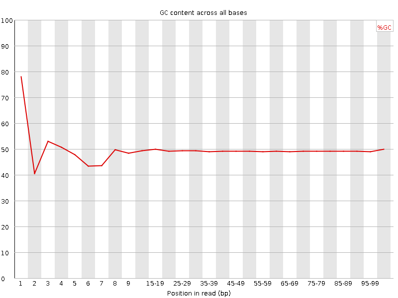
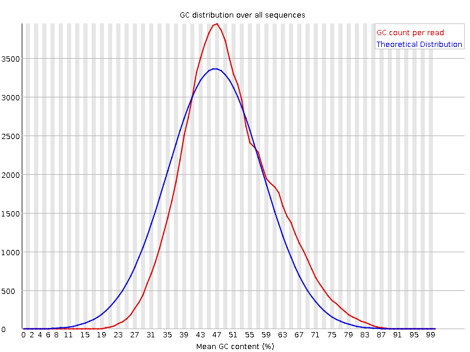
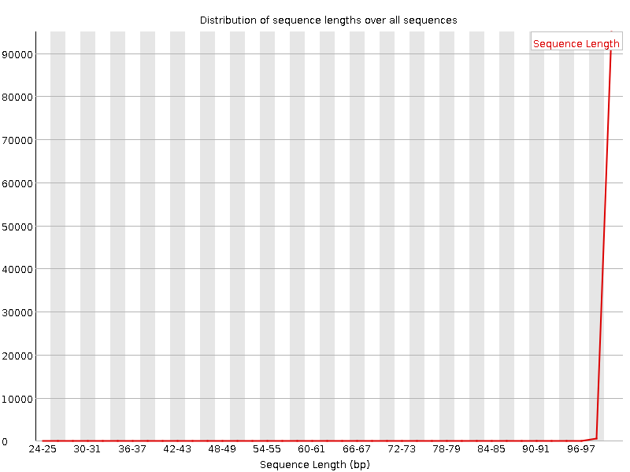
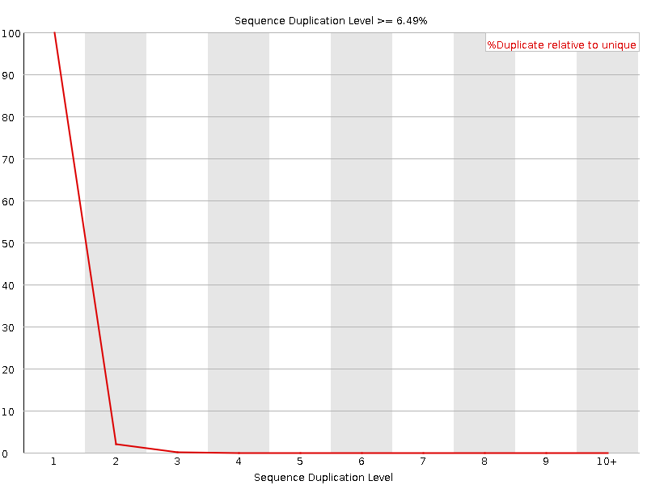
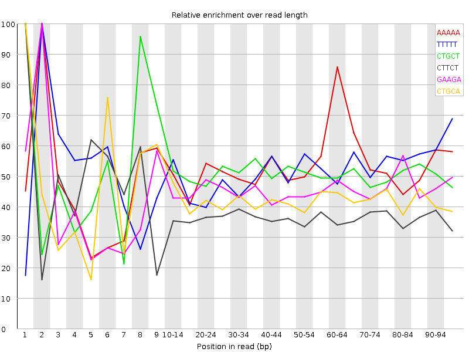

![[OK]](Icons/tick.png) Basic Statistics
Basic Statistics
| Measure | Value |
|---|---|
| Filename | female_repl1_R2.qc.fq.gz |
| File type | Conventional base calls |
| Encoding | Sanger / Illumina 1.9 |
| Total Sequences | 96615 |
| Filtered Sequences | 0 |
| Sequence length | 25-100 |
| %GC | 49 |
Per base sequence quality

Per sequence quality scores

![[FAIL]](Icons/error.png) Per base sequence content
Per base sequence content

Per base GC content

![[WARN]](Icons/warning.png) Per sequence GC content
Per sequence GC content

Per base N content

Sequence Length Distribution

Sequence Duplication Levels

Overrepresented sequences
No overrepresented sequences
Kmer Content

| Sequence | Count | Obs/Exp Overall | Obs/Exp Max | Max Obs/Exp Position |
|---|---|---|---|---|
| AAAAA | 32530 | 3.4376278 | 6.4711146 | 2 |
| TTTTT | 28280 | 2.911997 | 5.615788 | 2 |
| CTGCT | 23960 | 2.6626542 | 5.210128 | 1 |
| CTTCT | 23165 | 2.4941604 | 6.644712 | 1 |
| GAAGA | 21880 | 2.4377463 | 5.3834033 | 2 |
| CTGCA | 21195 | 2.367631 | 5.5578685 | 1 |
| CTCCT | 21245 | 2.3390481 | 8.848834 | 1 |
| CTTCA | 19865 | 2.1499743 | 7.4559255 | 1 |
| CAGGA | 17715 | 2.007798 | 5.2052836 | 1 |
| CTCCA | 18030 | 1.9954038 | 6.353465 | 1 |
| CTGGA | 17530 | 1.9765514 | 8.684532 | 1 |
| CTCTG | 17105 | 1.9008641 | 5.1037993 | 1 |
| CACAG | 16920 | 1.8999128 | 5.0495825 | 1 |
| CTGAA | 16930 | 1.859088 | 8.247778 | 1 |
| CTTCC | 16820 | 1.8518609 | 5.425177 | 1 |
| CTTTG | 16565 | 1.8002346 | 6.706898 | 1 |
| CTTTT | 17075 | 1.7978874 | 7.606293 | 1 |
| TGGAA | 15905 | 1.7628781 | 5.72673 | 2 |
| CCCAG | 14805 | 1.6911391 | 5.5193334 | 1 |
| CTGGG | 14555 | 1.6850842 | 6.203285 | 1 |
| TGAAA | 15545 | 1.678016 | 5.319085 | 2 |
| CTGAG | 14330 | 1.6157433 | 5.555942 | 1 |
| CTCAG | 14420 | 1.6108158 | 8.176479 | 1 |
| CTCCC | 13475 | 1.5170555 | 5.224428 | 1 |
| GGATG | 13310 | 1.5147809 | 5.1179256 | 4 |
| GTTTT | 13990 | 1.4868431 | 5.338645 | 1 |
| CTCAT | 11590 | 1.2543772 | 5.4883895 | 1 |
| CTCAA | 9990 | 1.0868331 | 5.3087454 | 1 |